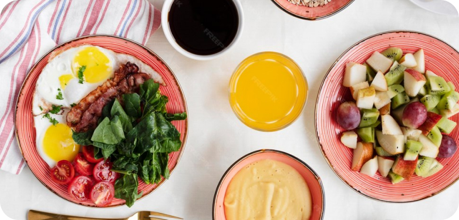
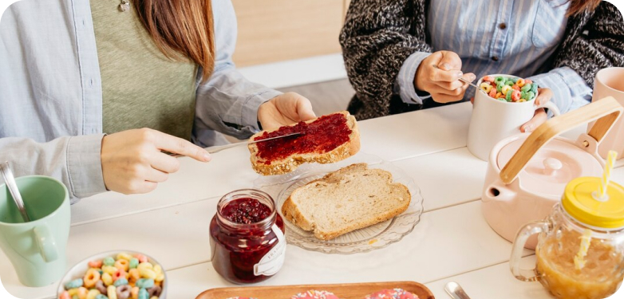
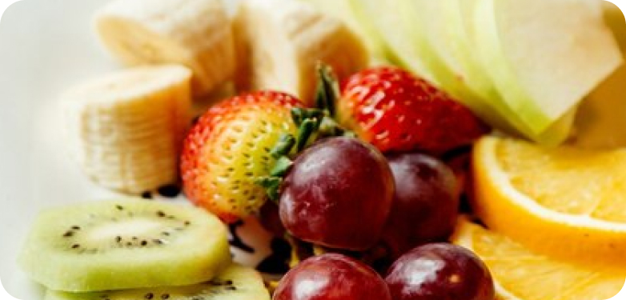
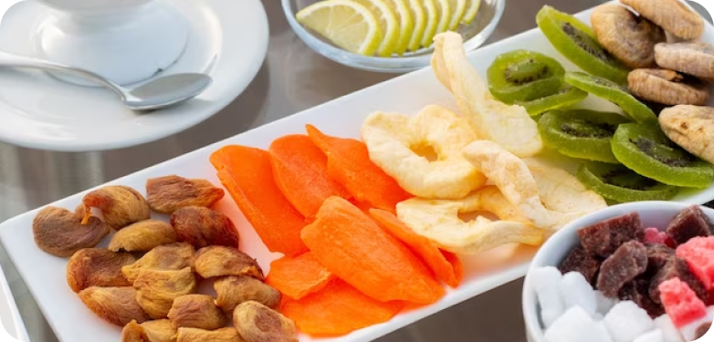

Our Blog
We'll explore essential tips and strategies for creating an exceptional breakfast catering experience. From menu planning to presentation and accommodating dietary needs, discover how to delight your guests with a delicious morning spread.
1. Plan a Diverse Menu: Include a variety of options such as pastries, fruit platters, yogurt parfaits, and savory dishes like breakfast burritos or frittatas to cater to different tastes and dietary preferences.
2. Fresh Ingredients: Opt for fresh, high-quality ingredients sourced from local suppliers whenever possible to enhance the flavor and quality of the breakfast offerings.
3. Presentation Matters: Pay attention to the presentation of the breakfast spread by arranging items neatly on platters and using garnishes to add visual appeal, making the meal more inviting.
4. Consider Dietary Restrictions: Take into account dietary restrictions and preferences of guests by offering gluten-free, vegetarian, and vegan options to ensure that everyone can enjoy a satisfying breakfast.
5. Keep it Balanced: Strike a balance between sweet and savory items, incorporating protein-rich dishes like scrambled eggs or breakfast sandwiches alongside lighter options like fresh fruit and granola.
6. Customization Stations: Set up customization stations where guests can personalize their breakfast items, such as a build-your-own parfait bar or a make-your-own omelet station, adding an interactive element to the catering experience.
7. Seasonal Specialties: Incorporate seasonal specialties and flavors into the menu to reflect the time of year and add a unique twist to the breakfast spread.
8. Beverage Options: Offer a selection of beverages including coffee, tea, juices, and infused water to complement the breakfast menu and keep guests refreshed.
9. Beverage Options: Offer a selection of beverages including coffee, tea, juices, and infused water to complement the breakfast menu and keep guests refreshed.
10. Feedback and Adaptation: Gather feedback from guests to understand their preferences and make adjustments accordingly for future breakfast catering events, ensuring continuous improvement and customer satisfaction.
